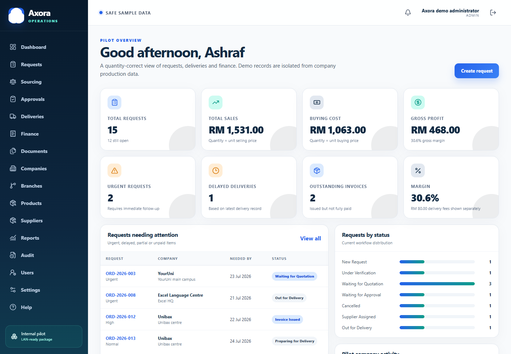
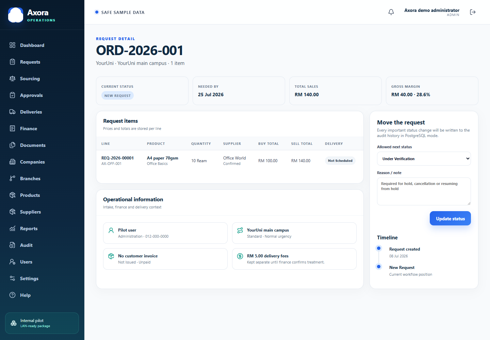
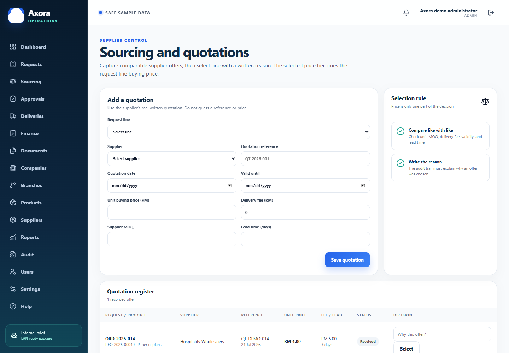
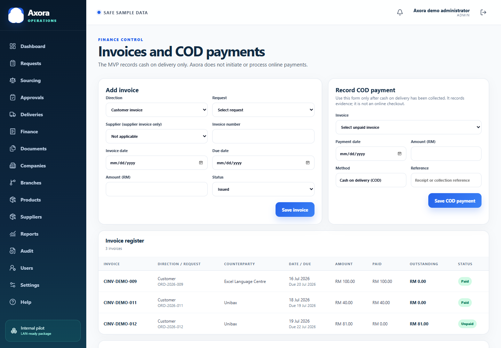

دليل عربي مصوّر يشرح لك ماذا تفتح، ماذا تنسخ، ومتى تتوقف وتسأل المشرف.
البرنامج، قاعدة البيانات، الشعار، الاختبارات، النسخ الاحتياطي، وملفات التشغيل.
تركيب Ubuntu، عنوان الشبكة الحقيقي، تشغيل Docker، واختبار الاسترجاع على جهاز السيرفر.
السيرفر هنا هو نفس كمبيوترك. الفرق فقط أنه يبقى يعمل ويعطي صفحات Axora لأجهزة المكتب عبر شبكة الشركة.
يفتح العنوان https://axora.internal، يسجّل الدخول، ثم يستخدم الطلبات والتوريد والتوصيل والفواتير.
قاعدة البيانات ومنفذ البرنامج لا يظهران للشبكة. Caddy فقط يستقبل المتصفح على المنفذين 80 و443.
لا تعمل Port Forwarding في الراوتر. Axora مخصص لشبكة المكتب فقط، وليس للإنترنت العام.
نعم. Node.js وNext.js وPostgreSQL وDocker وCaddy وUbuntu كلها أدوات مجانية. تحتاج إنترنت فقط لتنزيلها أول مرة والتحديثات لاحقًا.
اسم المجلد هو axora-app. لا تنقل ملفًا واحدًا فقط؛ انسخ المجلد كاملًا إلى السيرفر.
اذهب إلى C:\Users\ASHRAF\Desktop\Axora.
ستجد شعار Axora داخل public/brand ودليل README في الجذر.
استخدم USB أو شبكة داخلية معتمدة. لا تنسخ node_modules؛ أمر Docker سيبنيه من جديد.
هذا الملف خاص بالتجربة على Windows. أسرار السيرفر تُنشأ من جديد داخل Ubuntu.
لا تخمّن هذه القيم. اكتبها على ورقة ثم ضعها في الملف لاحقًا.
مثال فقط: 192.168.10.50. الأفضل عمل DHCP reservation في راوتر الشركة.
مثال فقط: 192.168.10.0/24. لا تستخدم المثال قبل التأكد.
مثل enp5s0. ستراه بأمر ip -brief address.
المقترح: axora.internal. يجب ربطه بالعنوان الثابت.
إكمال الجدار الناري بقيم خاطئة قد يمنعك من الوصول للسيرفر. اسأل مسؤول الشبكة بدل التخمين.
يمكن ذلك، لكنها ليست مطلوبة. هذا الدليل يستخدم Terminal لأنه أبسط وأخف وأوضح للتكرار.
اضغط Ctrl + Alt + T.
sudo mkdir -p /srv/axora sudo chown "$USER":"$USER" /srv/axora
من USB يمكنك استخدام File Manager، أو أمر cp -a بعد معرفة اسم مسار USB.
cd /srv/axora chmod +x scripts/server/*.sh database/init/*.sh bash scripts/server/preflight.sh
يعرض إصدار Ubuntu، عناوين الشبكة، مساحة القرص، وهل Docker وopenssl وcurl موجودة. لا يغيّر شيئًا.
انسخ اسم كرت Ethernet، عنوان IP الحالي، نطاق الشبكة، والمساحة المتاحة على SSD.
هذا طبيعي في أول مرة. انتقل إلى الصفحة التالية وثبّت Docker.
المكان النهائي المقترح هو /srv/axora. تغيير المكان بعد التشغيل يجعل النسخ الاحتياطي والخدمة اليومية أصعب.
يحتاج هذا الجزء اتصال إنترنت. السكربت يضيف مستودع Docker الرسمي، يثبت Docker Engine وCompose، ويجعلهما يعملان بعد إعادة التشغيل.
cd /srv/axora bash scripts/server/install-docker-ubuntu.sh
عند كتابة كلمة المرور لن ترى نجومًا أو حروفًا. هذا طبيعي. اكتبها ثم اضغط Enter.
اعمل Sign out ثم Sign in مرة واحدة حتى تصبح عضوًا في مجموعة docker.
docker --version docker compose version docker run --rm hello-world
يعرض الإصدار.
يتأكد أن Compose جاهز.
ينزل حاوية صغيرة ويختبر التشغيل.
لم يتم تفعيل عضوية docker بعد. اعمل Sign out وSign in؛ لا تستخدم chmod عشوائيًا على Docker socket.
لا تضف منفذًا مثل 2375 أو 2376 ولا تعرّض Docker daemon للشبكة.
cd /srv/axora cp .env.server.example .env nano .env
داخل nano استبدل عنوان المثال بعنوان السيرفر الحقيقي. احفظ بـ Ctrl+O ثم Enter، واخرج بـ Ctrl+X.
LAN_IP=192.168.10.50 AXORA_HOST=axora.internal
bash scripts/server/prepare-secrets.sh
سيُنشئ أسرار خدمات PostgreSQL والتطبيق والجلسات داخل secrets/. لا ينشئ السكربت أي كلمة مرور لمستخدم.
لا يختار المسؤول كلمة مرور للمستخدم ولا يرسل كلمة مؤقتة. ينشئ المستخدم كلمة مروره بنفسه من رابط إعداد أحادي الاستخدام.
تُنشأ داخل Ubuntu بصلاحية ملف 600 ولا تدخل صورة Docker أو Git.
يجب أن يؤكده مسؤول الشبكة. السكربت يرفض ترك عنوان المثال.
لا تستخدم cat secrets/* أمام الآخرين، ولا تنسخ أي رمز دعوة أو مفتاح خدمة إلى وثيقة.
cd /srv/axora bash scripts/server/deploy.sh
الأمر يفحص الإعدادات، يبني صورة البرنامج، يشغّل PostgreSQL، يطبّق migrations، ثم يشغّل التطبيق وCaddy وينتظر حتى تصبح الحاويات Healthy.
نفّذ أمر الدعوة الموثق بعد تفعيل إرسال البريد. الأمر لا يقبل كلمة مرور ولا يطبع رمز الإعداد.
npm run bootstrap:first-platform-owner -- --help
bash scripts/server/status.sh
قاعدة البيانات تقبل الاتصال.
البرنامج حي وقادر على الوصول للقاعدة.
عنوان HTTPS جاهز.
تحقق من اكتمال الدعوة والملف الشخصي ومن أن رابط الإعداد أصبح غير صالح لإعادة الاستخدام.
الحرف -v يحذف volumes التي تحتوي قاعدة البيانات وشهادة Caddy. في التشغيل العادي استخدم stop أو restart فقط.
تحقق من أن DEMO_MODE=false ولا تشغّل سكربت بيانات العرض على قاعدة الإنتاج.
اطلب من مسؤول الشبكة إنشاء سجل A باسم axora.internal يشير إلى IP السيرفر الثابت. كل أجهزة المكتب ستعرفه تلقائيًا.
إذا لا يوجد DNS داخلي، أضف السطر في كل جهاز معتمد يدويًا.
192.168.10.50 axora.internal
cd /srv/axora bash scripts/server/export-caddy-root.sh
سينتج ملف caddy-root.crt. هذا ملف عام آمن للتوزيع على أجهزة المكتب المعتمدة.
وزّع الملف root.crt فقط. المفتاح الخاص يبقى داخل volume اسمها caddy_data ولا يرسل لأي جهاز.
لا تعتبر الشبكة ناجحة لأن الموقع فتح داخل السيرفر نفسه. افتحه من كمبيوتر مكتب آخر بعد تثبيت الشهادة.

لوحة التحكم تعرض 15 طلبًا تجريبيًا، المبيعات، التكلفة، الربح، الفواتير، والتنبيهات.
اكتب https://axora.internal في المتصفح.
استخدم حسابك الشخصي. لا تشارك Admin.
ابدأ بالطلبات العاجلة والتوصيلات المتأخرة والفواتير غير المدفوعة.
Axora يحسب كل سطر هكذا: الكمية × سعر الوحدة. مثال التحقق القديم الصحيح هو مبيعات RM640، تكلفة RM480، ربح RM160، وهامش 25%.
لا تدخل رسوم التوصيل داخل المبيعات أو الربح حتى تؤكد Finance طريقة محاسبتها.

صفحة الطلب تحفظ المنتجات والأسعار والمورّد والتوصيل والفاتورة، وتعرض الحالات المسموح بها فقط.
New Request ← Under Verification ← Waiting for Quotation ← Waiting for Approval ← Approved ← Supplier Assigned ← Ordered ← Preparing ← Out for Delivery ← Delivered ← Invoice Issued ← Completed
اختر الشركة أولًا؛ سيعرض Axora فروعها فقط. أضف منتجًا أو أكثر وحدد الكمية وتاريخ الحاجة.
يعرض النظام الخطوة التالية المسموحة. On Hold وCancelled واستئناف الطلب الموقوف تحتاج سببًا مكتوبًا.
عطّل master record أو ألغِ الطلب بسبب. السجل Audit يحتفظ بمن غيّر ومتى.
Completed وCancelled لا يتحركان تلقائيًا. التصحيح يحتاج عملية معتمدة من المشرف.
أدخل عرض المورّد الحقيقي في Sourcing، ثم اختره بسبب. السعر المختار فقط يصبح تكلفة شراء السطر.

سجّل المرجع والسعر والرسوم وMOQ ومدة التوصيل. عند الاختيار اكتب السبب.

عند اختيار «ادفع» تعيد أكسورا حساب المبلغ الموثوق، وتسجل الطلب كمدفوع، وتصدر الفاتورة النهائية. يبقى التسليم والاستلام مسارًا مستقلاً.
سجّل المراجع والقرار والسبب قبل نقل حالة الطلب إلى Approved.
أنشئ سجلًا لكل شحنة. التوصيل الجزئي لا يمسح الشحنة السابقة.
ارفع PDF أو صورة أو TXT/CSV حتى 2MB. لا ترفع برامج أو كلمات سر.
هذا الفحص موجود في الصفحة وفي PostgreSQL أيضًا. إذا رفض النظام الرقم، راجع سجلات الشحنات السابقة.
صفحة Requests وReports تعطي ملف طلبات UTF‑8 يفتح في Excel أو LibreOffice. شارك التقرير فقط مع شخص مخوّل.
افتح Users بحساب Admin. لا تجعل جميع الناس Admin، ولا تستخدم حسابًا مشتركًا.
| الدور | ماذا يفعل؟ | لمن؟ |
|---|---|---|
| Admin / Supervisor | كل الوظائف، المستخدمون، Audit، وإدارة الموافقات. | شخص أو شخصان معتمدان. |
| Operations | الشركات والفروع والمنتجات والمورّدون والطلبات والتوريد والتوصيل. | فريق العمليات. |
| Finance | الفواتير وتأكيد الدفع والإيصالات والتقارير المالية. | المحاسبة فقط. |
| Viewer | قراءة التقارير والعمليات بدون تغيير. | المشرف الذي يريد المتابعة. |
| IT support | إعدادات وصيانة تقنية بدون اعتماد أعمال. | مسؤول IT. |
اكتب الاسم والبريد والدور وكلمة مؤقتة لا تقل عن 14 حرفًا.
استخدم Password Manager أو سلّمها شفهيًا. اطلب تغييرها وفق سياسة الشركة.
اضغط Deactivate. لا تحذف حسابه لأن Audit يحتاج معرفة من نفّذ التغييرات القديمة.
الدور التقني لا يعني أن صاحبه يوافق سعرًا أو دفعة أو إلغاء طلب. افصل الصلاحيات.
Cookie الجلسة HttpOnly وSameSite=Strict، وتعمل Secure في Production. تسجيل الخروج ينهي الجلسة على المتصفح.
cd /srv/axora bash scripts/server/backup.sh
سينشئ مجلدًا مثل backups/axora_2026-07-22_021500 ويضع داخله:
bash scripts/server/verify-backup.sh backups/axora_DATE_TIME
bash scripts/server/install-backup-timer.sh
تفيد في خطأ صغير، لكنها تضيع إذا مات SSD أو سُرق الجهاز.
هذه هي الحماية الحقيقية من تلف SSD. انسخ مجلد النسخة بعد نجاح checksum.
يمكن تغيير RETENTION_DAYS عند التشغيل. تأكد أن سياسة الشركة توافق قبل حذف النسخ القديمة.
افصله بعد النسخ أو استخدم NAS بصلاحيات محدودة؛ الفيروس أو الخطأ قد يمسح الجهاز والنسخة معًا.
وجود ملف backup لا يكفي. يجب أن تثبت أن PostgreSQL يستطيع قراءته واسترجاعه.
bash scripts/server/restore-test.sh \ backups/axora_DATE_TIME/axora.dump
يتأكد أن الملفات لم تتغير.
لا يوقف Axora ولا يلمس Production.
يعلن النجاح فقط إذا عاد الهيكل.
bash scripts/server/restore-production.sh \ backups/axora_DATE_TIME/axora.dump
سيطلب منك كتابة RESTORE AXORA حرفيًا. قبل الاستبدال ينشئ نسخة أخيرة، يوقف الكتابة، يعيد قاعدة البيانات، يطبق migrations، ثم يفحص الصحة.
استخدم restore-test للتعلم. Production restore يكون بعد موافقة المشرف، تحديد النسخة الصحيحة، وإبلاغ المستخدمين أن النظام سيتوقف.
استرجاع كارثة جهاز كامل يحتاج أيضًا إعادة uploads وcaddy_data. نفّذه بمساعدة مسؤول IT حتى لا تتغير شهادة كل أجهزة المكتب.
Docker يمرر المنافذ قبل بعض قواعد UFW، لذلك السكربت يضع UFW وقاعدة DOCKER-USER معًا.
bash scripts/server/configure-firewall.sh \ 192.168.10.0/24 enp5s0 22
سيعرض القيم ثم يطلب كتابة APPLY FIREWALL. قبل ذلك تأكد أن SSH مسموح من شبكة المكتب.
| المنفذ | الحالة الصحيحة | السبب |
|---|---|---|
| 22 / SSH | من شبكة المكتب فقط | صيانة Terminal. |
| 80 و443 | من شبكة المكتب فقط | Caddy والموقع. |
| 3000 | غير منشور | Next.js داخل Docker فقط. |
| 5432 | غير منشور | PostgreSQL داخل الشبكة الخاصة فقط. |
| 2019 | غير منشور | Caddy admin API. |
يجب أن يفتح HTTPS وتظهر صفحة Sign in.
يجب ألا يصل إلى Axora.
تأكد أن قاعدة DOCKER-USER بقيت بعد reboot.
أنت أمام الكمبيوتر في المكتب؛ استخدم Terminal المحلي وصحح القيم. لا تفعل firewall عن بعد قبل اختبار الوصول.
| المطلوب | الأمر |
|---|---|
| فحص كل شيء | bash scripts/server/status.sh |
| عرض الحاويات | docker compose ps |
| آخر logs للبرنامج | docker compose logs --tail=100 app |
| آخر logs للبوابة | docker compose logs --tail=100 caddy |
| إعادة تشغيل البرنامج | docker compose restart app |
| نسخة احتياطية | bash scripts/server/backup.sh |
| رؤية مؤقت النسخ | systemctl list-timers axora-backup.timer |
أنشئ نسخة backup وتحقق منها.
انسخ نسخة المشروع الجديدة بعد مراجعتها، ولا تستبدل secrets أو .env.
شغّل npm run verify على جهاز التطوير.
على السيرفر شغّل bash scripts/server/deploy.sh.
اختبر login وطلبًا تجريبيًا من جهاز مكتب آخر.
الإصدارات مثبتة في compose.yaml. حدّثها بقصد وبعد backup واختبار، وليس ببرنامج auto-update غير مراقب.
تقنيًا يمكن، لكن لا يُنصح في الشركة: اللعبة أو restart أو crash يوقف Axora. أثناء الاستضافة اتركه مخصصًا للسيرفر.
| المشكلة | افحص | الحل الأول |
|---|---|---|
| الموقع لا يفتح | status.sh وIP/DNS | تأكد أن الجهاز يعمل وأن axora.internal يشير إلى IP الصحيح. |
| تحذير شهادة | caddy-root.crt | ثبّت الشهادة في Trusted Root ثم أعد فتح المتصفح. |
| app unhealthy | docker compose logs app | ابحث عن DB connection أو secret file مفقود. |
| db unhealthy | مساحة SSD وlogs | لا تحذف volume. افحص القرص ثم اطلب مساعدة IT. |
| Permission denied للرفع | مالك data/uploads | sudo chown -R 1001:1001 data/uploads |
| كلمة الدخول لا تعمل | البريد والدور وحالة Active | Admin يعيد إنشاء/تفعيل الحساب؛ لا يغيّر قاعدة البيانات يدويًا. |
| Backup فشل | مساحة backups وحالة db | أصلح السبب ثم أعد backup؛ لا تعتبر ملف partial نسخة. |
| رقم التوصيل مرفوض | الشحنات السابقة | المجموع لا يجوز أن يتجاوز الكمية المطلوبة. |
إذا رأيت نصيحة على الإنترنت تستخدم down -v أو تحذف /var/lib/postgresql، توقف. خذ backup واطلب مراجعة.
انسخ آخر 100 سطر من log بدون كلمات سر، سجّل الوقت، ماذا فعل المستخدم، وما الذي تغيّر قبل المشكلة.
date bash scripts/server/status.sh docker compose logs --since=30m --tail=200 app db caddy
عندما يفتح مستخدم معتمد Axora من جهاز مكتب آخر، تظهر الشهادة بلا تحذير، يسجّل الدخول، ينشئ طلب اختبار، تنجح النسخة والاسترجاع المؤقت، ويعمل كل شيء بعد إعادة تشغيل السيرفر.
استخدم بيانات Demo فقط حتى يوافق المشرف وتنجح اختبارات الشبكة والنسخ والاسترجاع.
افتح الصفحة المناسبة، انسخ الأمر، اقرأ ما سيحدث، ثم نفّذه. عندما تكون القيمة خاصة بالشبكة، اسأل بدل أن تخمّن.
cd /srv/axora bash scripts/server/preflight.sh bash scripts/server/deploy.sh
لكن لا تشغّل deploy قبل تثبيت Docker وضبط .env وإنشاء secrets كما شرح الدليل.